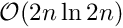
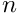
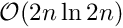
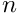

|
MIDAPACK - MIcrowave Data Analysis PACKage
1.1b
Parallel software tools for high performance CMB DA analysis
|
|
MIDAPACK - MIcrowave Data Analysis PACKage
1.1b
Parallel software tools for high performance CMB DA analysis
|
This algorithm exploits explicitly the fact that considered Toeplitz matrices are band-diagonal with a narrow band, i.e.,  and cuts the complexity of the operation down to
and cuts the complexity of the operation down to  from , where the latter is obtained assuming embedding of the full Toeplitz matrix of a rank  into a circulant matrix of a twice larger rank and performing the product via Fast Fourier transforms.
from , where the latter is obtained assuming embedding of the full Toeplitz matrix of a rank  into a circulant matrix of a twice larger rank and performing the product via Fast Fourier transforms.
The shift and overlap algorithm performs the same task as a series of products of a smaller circulant matrix with a rank  , where
, where  , by a corresponding, overlapping segments of the arbitrary matrix. The circulant matrix embeds a Toeplitz matrix, which is just the inital matrix trimmed to the size . The schematic of the algorithm is shown in the figure below.
, by a corresponding, overlapping segments of the arbitrary matrix. The circulant matrix embeds a Toeplitz matrix, which is just the inital matrix trimmed to the size . The schematic of the algorithm is shown in the figure below.

Here a product of a Toeplitz matrix marked in black by a vector is split into three products of a circulant matrix of a rank by three overlapping segments of the input vector. Each product is marked by a different color, however the circulanr matrix by which the vector segments are multiplied is always the same. The overlaps are clearly necessary to avoid contributions from the circulant corners of the matrix. At the end the entries of the final vector which are biased by the corner contributions are removed from the result and the remainders combined together. Note that the edge segments need to be padded by zeros. The padding is done in the way that the circulant block size used is always the same. This helps to save the time needed for FFT related precomputation (FFT plans etc) and optimize a number of required FFTs.
The generalization of the algorithm for the case of a general matrix instead of a vector, as shown in the figure, is straightforward. We note that each of the elemental products of the circulant matrix times a general matrix subblock could in principle be performed in a single step using an FFT, which permits a computation of many identical FFTs simultanenously rather than it being implemented as a series of the products of the circulant matrix by subblock columns. Given that the gain in using multi-vector is not clear in current implementations of the FFTs we looked at and, if present, it is probably at the best limited to a relatively small number of the vectors, the adopted solution in the package represents the product of the circulant block by a general matrix subblocks as series of products each involving the circulant matrix by a subset of all columns of the general matrix. The number of the columns is set by the toeplitz_init routine.
In general given the size of the input problem  the cost of the computation is:
the cost of the computation is:
![\[ n/(n-2\lambda)\times b \ln b \sim n \ln b \sim n \ln \lambda \]](form_34.png)
where the first factor of the leftmost term gives a number of products to be performed and the latter the cost of each of them. Here we did not account on any gains from a multi-vector FFT, e.g., we have assumed that a simulatenous FFT of  -vectors is as costly as FFTs of a single vector.
-vectors is as costly as FFTs of a single vector.
 1.8.1.1
1.8.1.1